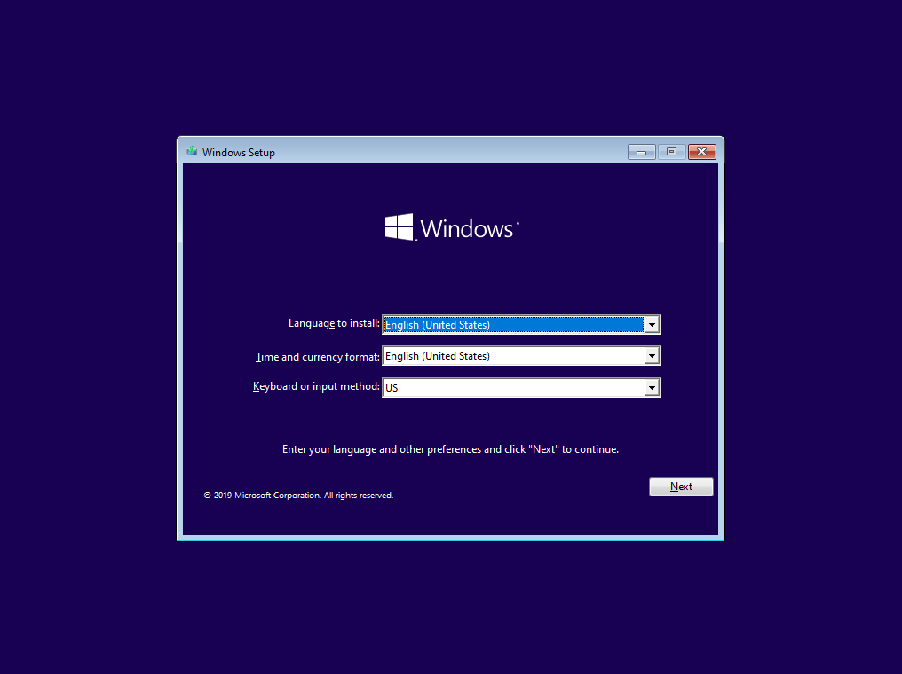
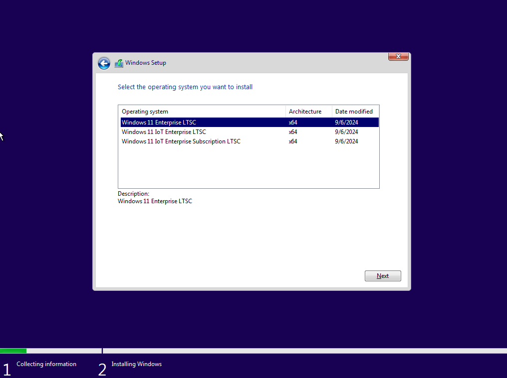
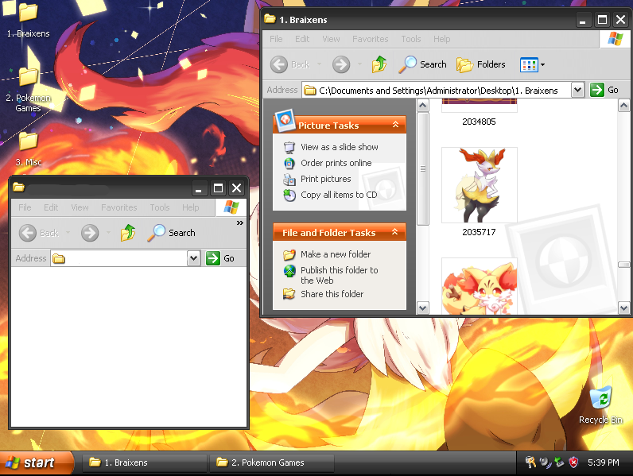

Used for installing the 2021 LTSC (not iOT) version of Windows 10 on Pentium M or similar machines which would normally crash when booting the installer.

Use this to install Windows 11 iOT LTSC 2024 using Windows 10's installer. This allows you to bypass hardware requirements, and even allows you to install onto MBR instead of UEFI.

Braixen/Pokemon themed version of Windows XP Pro SP3 with hundereds of Braixen Pictures, Pokemon Backgrounds, and Games. Along with a few utilities.
Disclaimer: all ISOs require a valid product key (if applicable), and are provided "as-is" with no warranty.